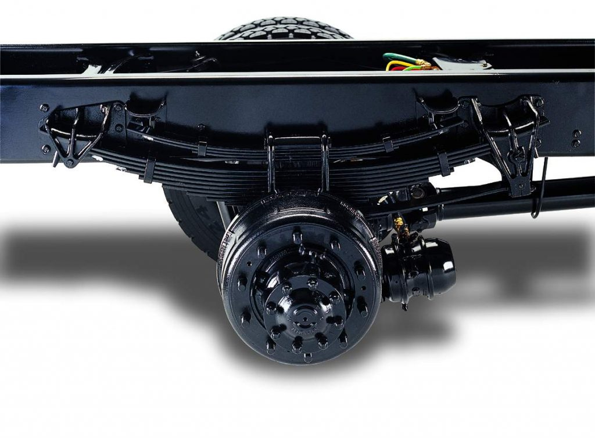
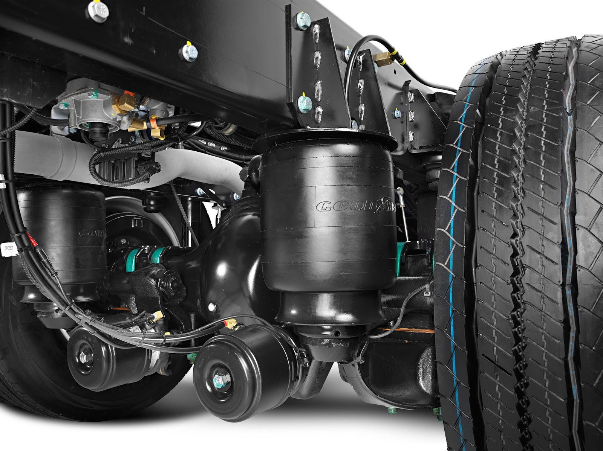

Informação Relevante
SISTEMA DE SUSPENSÃO DE CAMINHÃO: QUAIS PEÇAS SÃO AS MAIS IMPORTANTES PARA SUA MANUTENÇÃO?

Suspensão de Caminhão: o que é e como funciona?
A suspensão, nada mais é do que o sistema responsável por absorver impactos. Ou seja, tem a função de
manter
todos os
pneus em contato com o solo de uma forma constante e
estável. Assim, garantindo total produtividade e estabilidade ao veículo.
Além disso, é importante saber que a suspensão de caminhão não é igual às que encontramos nos veículos
de passeio.
Por isso, merecem um cuidado especial.
Uma suspensão mecânica, por exemplo, possui um feixe de molas semielípticas que, também, são conhecidas
por lâminas.
Seu funcionamento é muito simples de compreender.
Toda vez que o caminhão passa por um buraco ou ondulação na estrada, os feixes arqueados, que são
esticados ao
absorver o impacto, esticam-se. Dessa forma, reduzem-se as vibrações e todo o sistema consegue se manter
estável,
principalmente, nos veículos que transportam cargas pesadas.
A seguir, separamos as peças que você precisa dar mais importância, e estar sempre fazendo a sua correta
manutenção.
Peças mais importantes do sistema de suspensão de caminhão
Agora que você já sabe mais sobre o sistema de suspensão de caminhão, vamos te mostrar os itens mais
relevantes. Confira:
Amortecedor
O amortecedor tem um papel muito importante quando falamos sobre o sistema de suspensão de qualquer
veículo.
Através
dele, as rodas conseguem manter o contato com o solo, evitando problemas como a derrapagem, entre
outros.

Ele, também, controla todo o sistema de molas. Permitindo, assim, que elas sejam abertas e fechadas,
absorvendo melhor
os impactos causados pelos obstáculos na rodovia.
Graças ao amortecedor, o caminhoneiro pode sentir um conforto maior ao dirigir. Com isso, evita-se danos
físicos ou de
concentração durante uma viagem, resultando em uma maior segurança.Molas
Assim como o amortecedor, as molas reduzem os impactos que as irregularidades das pistam causam durante
o percurso
de um caminhão. Como, por exemplo, lombadas, buracos e outros obstáculos.
Quando falamos sobre essas peças, podemos encontrar dois tipos principais: feixe de molas ou mola
helicoidal.
A mola helicoidal é composta por uma só barra de aço que fica “enrolada” em um eixo. Sua função é
absorver todos
os impactos no veículo.
O feixe de mola, por sua vez, é um pouco diferente. Ele é composto por barras de ferro diferentes, que
são
semicurvadas. Também são chamadas de molas de flexão, e encontradas mais vezes nos veículos de carga que
precisam
de uma suspensão de maior robustez.
Pivô
A principal função do pivô é a ligação entre o telescópio e o chassi, cubo de roda e manga de eixo,
entre outros
importantes componentes de um caminhão.
Durante a aceleração e as curvas, ele acaba se mostrando mais útil. Pois, nesses momentos, precisa
suportar muito
peso e ter uma grande força para o veículo não perder o controle.
Podemos encontrar o pivô soldado com uma bandeja ou de maneira independente. No caso dos que são
soldados, se
qualquer problema acontecer com a peça, o indicado é realizar a troca da bandeja de suspensão inteira, o
que
pode sair caro.
Braço oscilante
Conhecido, também, como bandeja de suspensão, essa peça é diretamente ligada à roda do chassi do
caminhão.
O braço oscilante é quem determina o alinhamento de todas as rodas e faz o suporte de força do veículo
quando
ele está em alguma curva.
Esse item, é o que está mais perto das rodas e do chão e, por isso, acaba recebendo maior impacto. Dessa
forma,
precisa estar sempre passando por revisões.
Em caso de algum defeito, pode causar o desligamento do sistema de suspensão inteiro. E, em algumas
vezes,
desligar até mesmo a direção do veículo, resultando assim, em grande chance de acidentes.
Barra estabilizadora
Como o próprio nome sugere, é utilizada para estabilizar o caminhão. A barra estabilizadora faz isso
reduzindo
a rotação da carroceria nas curvas, evitando que o piloto perca o controle ou capote.
Isso, também ajuda o veículo a não sobrecarregar a sua suspensão durante o caminho. A sua composição é
muito
simples: uma barra de ferro grande, acoplada no chassi, que une os dois braços de suspensão de um eixo.
Com isso,
também acaba trazendo uma maior estabilidade ao veículo.
Como cuidar da suspensão de caminhão?
Como você pode ver ao longo desse texto, a suspensão é um item de grande importância para quem viaja
diariamente.
Então, é preciso manter sempre o seu bom estado. Pois, além de ter mais segurança nas estradas, o
trajeto se torna
mais confortável e o desgaste físico do motorista é reduzido.
Sendo assim, selecionamos algumas dicas que vão te ajudar a cuidar dessa peça. Confira:
Verifique todos os componentes da suspensão de caminhão
A primeira dica de todas, é a prevenção. Realize uma checagem geral em todos os itens desse sistema,
periodicamente.
O ideal é realizar esse procedimento a cada 10 mil quilômetros rodados. E, sempre, em uma oficina de
confiança.
Com isso, você evita problemas durante a viagem e possíveis gastos, caso alguma peça quebre.
Respeite o limite de carga
O excesso de carga é um dos fatores que mais prejudica a suspensão de caminhão. O peso maior do que o
indicado,
acaba desequilibrando o veículo e comprometendo diversas peças.
Então, para evitar danos e gastos, respeite o limite de carga estabelecido, sempre.
Lubrifique os amortecedores
Durante as viagens, é normal que sujeiras e poeiras se acumulem nos amortecedores. Isso faz com que a
eficiência
e movimentação sejam prejudicadas.
Sendo assim, o cuidado com a lubrificação é fundamental. E, também, lembre-se de utilizar lubrificantes
de qualidade.
Invista em peças de qualidade
Caso exista a necessidade de trocar peças, nunca deixe de lado a qualidade delas. A oficina precisa
contar com um
fornecedor de confiança, que entregue produtos originais com bons preços e entrega rápida.
Agora que você já leu esse texto, basta aplicar estas dicas em seu dia a dia. Esperamos que tenha
gostado
desse conteúdo.